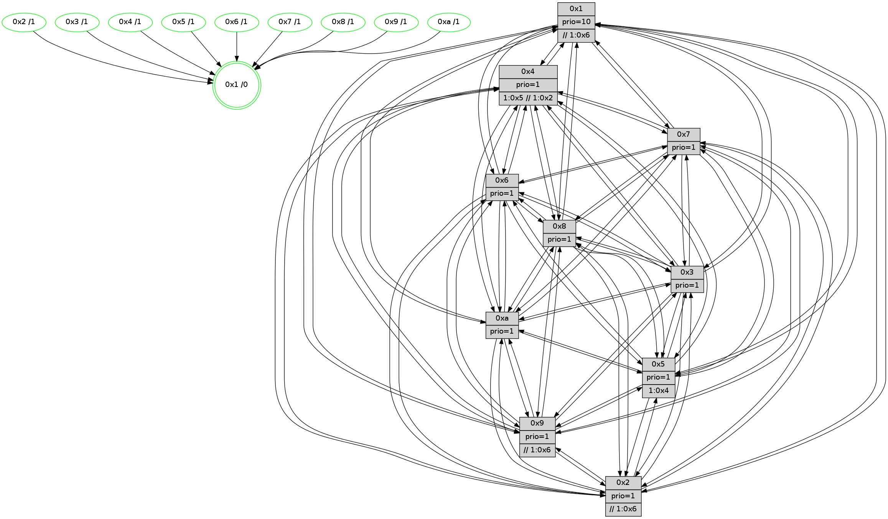

>> << IDX [start] -100 -25 -5 +0 +5 +25 +100 [720.002160072]
 Previous packets
----------------------------------------------------------------------
715.263392 beacon01(faad) #0 coord=01,02,03,04,05,06,07,0a,09,08 cycle=688.0ms assoc
-- color-indic=1 64 44 16
715.273375 beacon02(faad) #0 coord=01,02,03,04,05,06,07,0a,09,08 cycle=688.0ms assoc 64 d7 27
715.283374 beacon03(faad) #0 coord=01,02,03,04,05,06,07,0a,09,08 cycle=688.0ms assoc 64 ad 6a
715.293375 beacon04(faad) #0 coord=01,02,03,04,05,06,07,0a,09,08 cycle=688.0ms assoc 64 da 80
715.303375 beacon05(faad) #0 coord=01,02,03,04,05,06,07,0a,09,08 cycle=688.0ms assoc 64 a0 cd
715.313376 beacon06(faad) #0 coord=01,02,03,04,05,06,07,0a,09,08 cycle=688.0ms assoc 64 2e 1a
715.323376 beacon07(faad) #0 coord=01,02,03,04,05,06,07,0a,09,08 cycle=688.0ms assoc 64 54 57
715.333381 beacon0a(faad) #0 coord=01,02,03,04,05,06,07,0a,09,08 cycle=688.0ms assoc 64 25 5c
715.343362 beacon09(faad) #0 coord=01,02,03,04,05,06,07,0a,09,08 cycle=688.0ms assoc 64 ab 8b
715.353380 beacon08(faad) #0 coord=01,02,03,04,05,06,07,0a,09,08 cycle=688.0ms assoc 64 d1 c6
715.366419 [Hello(8): seq=402 sym=5,2,3,4,7,6,9,10,1 sysInfo=hasWarning stat=5:0,10,8,7/2:10,0,15,2/3:4,7,3,9/4:12,2,5,6/7:4,3,7,6/6:15,7,3,8/9:9,0,8,5/10:8,12,8,6/1:8,5,9,0]
715.369146 [Hello(2): seq=455 sym=4,5,7,6,3,9,8,10,1 sysInfo=hasWarning stat=4:12,13,3,4/5:2,4,3,0/7:14,14,9,4/6:0,5,6,6/3:1,13,1,3/9:12,15,0,1/8:13,11,15,4/10:3,1,2,4/1:4,0,4,1]
715.372922 [STC(2)->1 #0.66 tree-change,inconsistent-stability,stable,to-color d=1]
715.374390 [Color(1) seq=139 @0:0 prio=10 >>1.@6,1.@7,1.@9]
715.376763 [STC(6)->1 #0.66 tree-change,inconsistent-stability,stable,to-color d=1]
715.378976 [STC(3)->1 #0.66 tree-change,inconsistent-stability,stable,to-color d=1]
715.380276 [TreeStatus(2)-.->1 #0.66 tree-change,inconsistent-stability,stable child=1]
715.381701 [Color(6) seq=112 @0:0 prio=1]
715.383501 [Hello(5): seq=459 sym=7,6,4,3,1,9,8,10,2 sysInfo=hasWarning stat=7:5,3,8,4/6:5,2,7,7/4:0,10,15,5/3:8,10,0,6/1:5,2,8,1/9:2,6,0,0/8:7,6,15,4/10:15,11,6,5/2:7,0,2,0]
715.387489 [Color(2) seq=104 @0:0 prio=1 >>1.@6,1.@7,1.@9]
715.390007 [Hello(10): seq=391 sym=6,2,3,8,9,5,7,4,1 sysInfo=hasWarning stat=6:9,5,8,3/2:5,1,14,1/3:13,6,13,5/8:11,4,3,6/9:9,0,1,4/5:6,7,2,8/7:6,4,5,3/4:5,3,12,6/1:5,5,11,1]
715.392917 [Color(7) seq=100 @0:0 prio=1]
715.395226 [STC(5)->1 #0.66 tree-change,inconsistent-stability,stable,to-color d=1]
715.396869 [Color(5) seq=112 @0:0 prio=1 >1.@4,1.@6,1.@7,1.@9]
715.399444 [Color(9) seq=107 @0:0 prio=1 >>1.@6,1.@7,1.@9]
715.402313 [STC(10)->1 #0.66 tree-change,inconsistent-stability,stable,to-color d=1]
715.403956 [TreeStatus(10)-.->1 #0.66 tree-change,inconsistent-stability,stable child=1]
715.409482 [STC(8)->1 #0.66 tree-change,inconsistent-stability,stable,to-color d=1]
715.412699 [TreeStatus(8)-.->1 #0.66 tree-change,inconsistent-stability,stable child=1]
----------------------------------------------------------------------
716.051523 beacon01(faad) #0 coord=01,02,03,04,05,06,07,0a,09,08 cycle=688.0ms assoc
-- color-indic=1 64 80 18
716.061505 beacon02(faad) #0 coord=01,02,03,04,05,06,07,0a,09,08 cycle=688.0ms assoc 64 13 29
716.071506 beacon03(faad) #0 coord=01,02,03,04,05,06,07,0a,09,08 cycle=688.0ms assoc 64 69 64
716.081506 beacon04(faad) #0 coord=01,02,03,04,05,06,07,0a,09,08 cycle=688.0ms assoc 64 1e 8e
716.091505 beacon05(faad) #0 coord=01,02,03,04,05,06,07,0a,09,08 cycle=688.0ms assoc 64 64 c3
716.101505 beacon06(faad) #0 coord=01,02,03,04,05,06,07,0a,09,08 cycle=688.0ms assoc 64 ea 14
716.111506 beacon07(faad) #0 coord=01,02,03,04,05,06,07,0a,09,08 cycle=688.0ms assoc 64 90 59
716.121510 beacon0a(faad) #0 coord=01,02,03,04,05,06,07,0a,09,08 cycle=688.0ms assoc 64 e1 52
716.131510 beacon09(faad) #0 coord=01,02,03,04,05,06,07,0a,09,08 cycle=688.0ms assoc 64 6f 85
716.141511 beacon08(faad) #0 coord=01,02,03,04,05,06,07,0a,09,08 cycle=688.0ms assoc 64 15 c8
716.156021 [Hello(4): seq=459 sym=5,7,6,2,3,9,8,10,1 sysInfo= stat=5:6,14,6,7/7:12,7,7,2/6:3,9,9,8/2:12,1,4,8/3:11,11,15,5/9:5,8,4,3/8:11,11,8,8/10:3,9,10,7/1:15,11,7,1]
716.159575 [Hello(7): seq=459 sym=2,3,5,6,4,8,9,10,1 sysInfo=hasWarning stat=2:14,8,12,9/3:15,1,8,9/5:12,12,10,11/6:5,10,7,3/4:11,9,2,0/8:5,5,11,5/9:2,6,10,8/10:10,5,12,8/1:7,8,7,1]
716.163093 [Hello(1): seq=368 sym=4,2,9,5,10,3,8,6,7 sysInfo=coloring-mode-on,ColoringModeRequestCalled stat=4:6,1,5,0/2:1,12,12,9/9:4,3,6,0/5:1,10,7,0/10:11,15,13,8/3:6,14,3,11/8:9,15,1,7/6:5,13,14,7/7:6,4,3,8]
----------------------------------------------------------------------
716.839653 beacon01(faad) #0 coord=01,02,03,04,05,06,07,0a,09,08 cycle=688.0ms assoc
-- color-indic=1 64 3c 1d
716.849636 beacon02(faad) #0 coord=01,02,03,04,05,06,07,0a,09,08 cycle=688.0ms assoc 64 af 2c
716.859634 beacon03(faad) #0 coord=01,02,03,04,05,06,07,0a,09,08 cycle=688.0ms assoc 64 d5 61
716.869636 beacon04(faad) #0 coord=01,02,03,04,05,06,07,0a,09,08 cycle=688.0ms assoc 64 a2 8b
716.879635 beacon05(faad) #0 coord=01,02,03,04,05,06,07,0a,09,08 cycle=688.0ms assoc 64 d8 c6
716.889636 beacon06(faad) #0 coord=01,02,03,04,05,06,07,0a,09,08 cycle=688.0ms assoc 64 56 11
716.899637 beacon07(faad) #0 coord=01,02,03,04,05,06,07,0a,09,08 cycle=688.0ms assoc 64 2c 5c
716.909641 beacon0a(faad) #0 coord=01,02,03,04,05,06,07,0a,09,08 cycle=688.0ms assoc 64 5d 57
716.919641 beacon09(faad) #0 coord=01,02,03,04,05,06,07,0a,09,08 cycle=688.0ms assoc 64 d3 80
716.929641 beacon08(faad) #0 coord=01,02,03,04,05,06,07,0a,09,08 cycle=688.0ms assoc 64 a9 cd
716.941454 [Hello(10): seq=392 sym=6,2,3,8,9,5,7,4,1 sysInfo=hasWarning stat=6:10,5,8,3/2:5,1,14,1/3:13,6,13,5/8:11,4,4,7/9:9,0,1,4/5:6,7,2,8/7:7,4,5,3/4:6,3,12,6/1:6,5,11,1]
716.947169 [Hello(2): seq=456 sym=4,5,7,6,3,9,8,10,1 sysInfo=hasWarning stat=4:13,13,3,4/5:2,5,4,0/7:15,15,9,4/6:0,5,6,6/3:1,13,1,3/9:12,0,0,1/8:14,11,0,5/10:4,1,3,5/1:5,0,4,1]
716.949625 [Hello(5): seq=460 sym=7,6,4,3,1,9,8,10,2 sysInfo=hasWarning stat=7:6,3,8,4/6:5,2,7,7/4:1,10,15,5/3:8,10,0,6/1:6,2,8,1/9:2,7,0,0/8:8,6,0,5/10:15,11,7,6/2:7,0,2,0]
716.952110 [Hello(9): seq=403 sym=5,2,3,4,7,6,8,10,1 sysInfo=hasWarning stat=5:3,10,2,8/2:6,4,10,5/3:2,12,1,8/4:5,5,2,5/7:9,8,9,4/6:2,12,4,6/8:12,11,12,3/10:9,6,8,8/1:4,15,10,1]
716.956416 [Color(5) seq=113 @0:0 prio=1 >1.@4,1.@6,1.@7,1.@9]
716.958246 [Color(9) seq=108 @0:0 prio=1 >>1.@6,1.@7,1.@9]
716.960487 [Color(2) seq=105 @0:0 prio=1 >>1.@6,1.@7,1.@9]
716.965208 [Color(7) seq=101 @0:0 prio=1]
----------------------------------------------------------------------
717.627783 beacon01(faad) #0 coord=01,02,03,04,05,06,07,0a,09,08 cycle=688.0ms assoc
-- color-indic=1 64 9b 6d
717.637764 beacon02(faad) #0 coord=01,02,03,04,05,06,07,0a,09,08 cycle=688.0ms assoc 64 08 5c
717.647764 beacon03(faad) #0 coord=01,02,03,04,05,06,07,0a,09,08 cycle=688.0ms assoc 64 72 11
717.657766 beacon04(faad) #0 coord=01,02,03,04,05,06,07,0a,09,08 cycle=688.0ms assoc 64 05 fb
717.667767 beacon05(faad) #0 coord=01,02,03,04,05,06,07,0a,09,08 cycle=688.0ms assoc 64 7f b6
717.677766 beacon06(faad) #0 coord=01,02,03,04,05,06,07,0a,09,08 cycle=688.0ms assoc 64 f1 61
717.687765 beacon07(faad) #0 coord=01,02,03,04,05,06,07,0a,09,08 cycle=688.0ms assoc 64 8b 2c
717.697770 beacon0a(faad) #0 coord=01,02,03,04,05,06,07,0a,09,08 cycle=688.0ms assoc 64 fa 27
717.707770 beacon09(faad) #0 coord=01,02,03,04,05,06,07,0a,09,08 cycle=688.0ms assoc 64 74 f0
717.717771 beacon08(faad) #0 coord=01,02,03,04,05,06,07,0a,09,08 cycle=688.0ms assoc 64 0e bd
717.728990 [Hello(3): seq=460 sym=1,7,6,2,4,8,9,10,5 sysInfo= stat=1:7,0,8,1/7:11,7,4,2/6:12,10,0,8/2:15,6,5,8/4:7,0,4,4/8:8,4,6,3/9:11,15,10,6/10:1,8,8,6/5:7,5,6,7]
717.734868 [Hello(6): seq=460 sym=2,3,5,4,7,9,8,10,1 sysInfo= stat=2:9,13,14,7/3:1,2,6,7/5:2,11,7,9/4:4,4,6,0/7:11,10,3,1/9:5,13,7,6/8:2,15,9,6/10:9,7,15,7/1:15,15,4,1]
717.737520 [Hello(4): seq=460 sym=5,7,6,2,3,9,8,10,1 sysInfo= stat=5:7,15,6,7/7:13,8,7,2/6:3,9,9,8/2:13,2,4,8/3:11,11,15,5/9:6,9,4,3/8:11,11,8,8/10:4,9,10,7/1:0,11,7,1]
717.741740 [Hello(7): seq=460 sym=2,3,5,6,4,8,9,10,1 sysInfo=hasWarning stat=2:14,8,12,9/3:15,1,8,9/5:12,12,10,11/6:5,10,7,3/4:11,9,2,0/8:5,5,11,5/9:2,6,10,8/10:11,5,12,8/1:8,8,7,1]
717.745435 [Hello(1): seq=369 sym=4,2,9,5,10,3,8,6,7 sysInfo=coloring-mode-on,ColoringModeRequestCalled stat=4:6,1,5,0/2:2,13,12,9/9:5,4,6,0/5:2,11,7,0/10:12,15,13,8/3:6,14,3,11/8:9,15,1,7/6:5,13,14,7/7:6,5,3,8]
----------------------------------------------------------------------
718.415914 beacon01(faad) #0 coord=01,02,03,04,05,06,07,0a,09,08 cycle=688.0ms assoc
-- color-indic=1 64 27 68
718.425897 beacon02(faad) #0 coord=01,02,03,04,05,06,07,0a,09,08 cycle=688.0ms assoc 64 b4 59
718.435897 beacon03(faad) #0 coord=01,02,03,04,05,06,07,0a,09,08 cycle=688.0ms assoc 64 ce 14
718.445898 beacon04(faad) #0 coord=01,02,03,04,05,06,07,0a,09,08 cycle=688.0ms assoc 64 b9 fe
718.455896 beacon05(faad) #0 coord=01,02,03,04,05,06,07,0a,09,08 cycle=688.0ms assoc 64 c3 b3
718.465897 beacon06(faad) #0 coord=01,02,03,04,05,06,07,0a,09,08 cycle=688.0ms assoc 64 4d 64
718.475897 beacon07(faad) #0 coord=01,02,03,04,05,06,07,0a,09,08 cycle=688.0ms assoc 64 37 29
718.485901 beacon0a(faad) #0 coord=01,02,03,04,05,06,07,0a,09,08 cycle=688.0ms assoc 64 46 22
718.495901 beacon09(faad) #0 coord=01,02,03,04,05,06,07,0a,09,08 cycle=688.0ms assoc 64 c8 f5
718.505902 beacon08(faad) #0 coord=01,02,03,04,05,06,07,0a,09,08 cycle=688.0ms assoc 64 b2 b8
718.519877 [Color(6) seq=114 @0:0 prio=1]
718.521161 [Color(3) seq=112 @0:0 prio=1]
718.522927 [Hello(2): seq=457 sym=4,5,7,6,3,9,8,10,1 sysInfo=hasWarning stat=4:14,13,3,4/5:2,5,4,0/7:0,0,9,4/6:1,5,6,6/3:2,13,1,3/9:12,0,0,1/8:14,11,0,5/10:5,1,3,5/1:6,0,4,1]
718.526152 [Hello(10): seq=393 sym=6,2,3,8,9,5,7,4,1 sysInfo=hasWarning stat=6:11,6,8,3/2:6,2,14,1/3:14,6,13,5/8:11,4,4,7/9:10,1,1,4/5:7,8,2,8/7:8,5,5,3/4:7,3,12,6/1:7,5,11,1]
718.529287 [Hello(9): seq=404 sym=5,2,3,4,7,6,8,10,1 sysInfo=hasWarning stat=5:3,10,2,8/2:6,5,10,5/3:3,12,1,8/4:6,5,2,5/7:10,9,9,4/6:3,12,4,6/8:13,11,12,3/10:10,6,8,8/1:5,15,10,1]
718.531829 [Hello(5): seq=461 sym=7,6,4,3,1,9,8,10,2 sysInfo=hasWarning stat=7:7,4,8,4/6:6,2,7,7/4:2,10,15,5/3:9,10,0,6/1:7,2,8,1/9:2,8,0,0/8:8,6,0,5/10:0,11,7,6/2:7,1,2,0]
718.535206 [Color(10) seq=92 @0:0 prio=1]
718.537029 [Color(9) seq=109 @0:0 prio=1 >>1.@6,1.@7,1.@9]
718.538764 [Color(5) seq=114 @0:0 prio=1 >1.@4,1.@6,1.@7,1.@9]
718.540470 [STC(1) #0.67 tree-change,inconsistent-stability,stable,to-color d=0]
718.541928 [Color(7) seq=102 @0:0 prio=1]
718.543527 [Color(1) seq=141 @0:0 prio=10 >>1.@6,1.@7,1.@9]
718.545556 [Hello(8): seq=404 sym=5,2,3,4,7,6,9,10,1 sysInfo=hasWarning stat=5:1,11,8,7/2:11,1,15,2/3:5,7,3,9/4:14,2,5,6/7:6,4,7,6/6:1,7,3,8/9:10,1,8,5/10:8,12,8,6/1:10,5,9,0]
718.548083 [Color(2) seq=106 @0:0 prio=1 >>1.@6,1.@7,1.@9]
718.550605 [Color(8) seq=127 @0:0 prio=1]
----------------------------------------------------------------------
719.204046 beacon01(faad) #0 coord=01,02,03,04,05,06,07,0a,09,08 cycle=688.0ms assoc
-- color-indic=1 64 e3 66
719.214029 beacon02(faad) #0 coord=01,02,03,04,05,06,07,0a,09,08 cycle=688.0ms assoc 64 70 57
719.224029 beacon03(faad) #0 coord=01,02,03,04,05,06,07,0a,09,08 cycle=688.0ms assoc 64 0a 1a
719.234030 beacon04(faad) #0 coord=01,02,03,04,05,06,07,0a,09,08 cycle=688.0ms assoc 64 7d f0
719.244030 beacon05(faad) #0 coord=01,02,03,04,05,06,07,0a,09,08 cycle=688.0ms assoc 64 07 bd
719.254028 beacon06(faad) #0 coord=01,02,03,04,05,06,07,0a,09,08 cycle=688.0ms assoc 64 89 6a
719.264030 beacon07(faad) #0 coord=01,02,03,04,05,06,07,0a,09,08 cycle=688.0ms assoc 64 f3 27
719.274035 beacon0a(faad) #0 coord=01,02,03,04,05,06,07,0a,09,08 cycle=688.0ms assoc 64 82 2c
719.284034 beacon09(faad) #0 coord=01,02,03,04,05,06,07,0a,09,08 cycle=688.0ms assoc 64 0c fb
719.294035 beacon08(faad) #0 coord=01,02,03,04,05,06,07,0a,09,08 cycle=688.0ms assoc 64 76 b6
719.305006 [STC(10)->1 #0.67 tree-change,inconsistent-stability,stable,to-color d=1]
719.307420 [Hello(6): seq=461 sym=2,3,5,4,7,9,8,10,1 sysInfo= stat=2:10,14,14,7/3:1,3,6,7/5:3,12,7,9/4:5,4,6,0/7:12,11,3,1/9:6,14,7,6/8:3,0,9,6/10:10,8,15,7/1:0,0,5,1]
719.310327 [Hello(7): seq=461 sym=2,3,5,6,4,8,9,10,1 sysInfo=hasWarning stat=2:14,9,12,9/3:15,1,8,9/5:12,12,10,11/6:5,10,7,3/4:11,9,2,0/8:6,6,11,5/9:2,6,10,8/10:11,5,12,8/1:9,9,7,1]
719.314050 [STC(4)->1 #0.67 tree-change,inconsistent-stability,stable,to-color d=1]
719.315642 [Hello(3): seq=461 sym=1,7,6,2,4,8,9,10,5 sysInfo= stat=1:8,1,9,1/7:12,8,4,2/6:13,10,0,8/2:0,7,5,8/4:8,0,4,4/8:9,5,6,3/9:12,0,10,6/10:2,9,8,6/5:8,6,6,7]
719.318070 [TreeStatus(4)-.->1 #0.67 tree-change,inconsistent-stability,stable child=1]
719.319937 [STC(6)->1 #0.67 tree-change,inconsistent-stability,stable,to-color d=1]
719.325986 [STC(5)->1 #0.67 tree-change,inconsistent-stability,stable,to-color d=1]
719.327959 [TreeStatus(5)-.->1 #0.67 tree-change,inconsistent-stability,stable child=1]
719.330228 [STC(3)->1 #0.67 tree-change,inconsistent-stability,stable,to-color d=1]
----------------------------------------------------------------------
719.992178 beacon01(faad) #0 coord=01,02,03,04,05,06,07,0a,09,08 cycle=688.0ms assoc
-- color-indic=1 64 5f 63